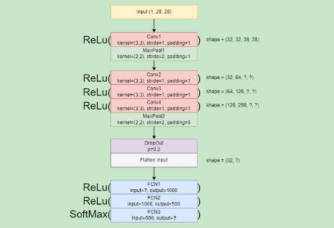

Name: Rachel Jasmine Canaman
Section: DS4A
Laboratory Task 6#

Objective:
Convert the given CNN architecture diagram into a PyTorch CNN model.
Step 1: Import Libraries
import torch
import torch.nn as nn
import torch.nn.functional as F
from torch.utils.data import DataLoader
from torchvision import datasets, transforms
import random
import numpy as np
from sklearn.metrics import confusion_matrix, classification_report, accuracy_score
import matplotlib.pyplot as plt
Step 2: Load Dataset
Downloads and transforms MNIST dataset into tensors.
transform = transforms.ToTensor()
train_data = datasets.MNIST(root='data', train=True, download=True, transform=transform)
test_data = datasets.MNIST(root='data', train=False, download=True, transform=transform)
Step 3: Split into Training and Validation Sets
Splits the training data into 80% training and 20% validation for performance monitoring.
train_set, val_set = torch.utils.data.random_split(train_data, [0.8, 0.2])
Step 4: Set Random Seed
def set_seed(seed):
np.random.seed(seed)
torch.manual_seed(seed)
random.seed(seed)
set_seed(143)
Step 5: Create Data Loaders
Loads the data in small batches for efficient training and evaluation.
batch_size = 10
train_loader = DataLoader(train_set, batch_size=batch_size, shuffle=True)
val_loader = DataLoader(val_set, batch_size=batch_size, shuffle=True)
test_loader = DataLoader(test_data, batch_size=batch_size, shuffle=False)
Step 6: Define the CNN Architecture
# Define the CNN architecture
class CNN(nn.Module):
def __init__(self):
super().__init__()
# Convolutional Layers
self.conv1 = nn.Conv2d(1, 32, kernel_size=3, stride=1, padding=1)
self.pool1 = nn.MaxPool2d(kernel_size=2, stride=2, padding=0)
self.conv2 = nn.Conv2d(32, 64, kernel_size=3, stride=1, padding=1)
self.conv3 = nn.Conv2d(64, 128, kernel_size=3, stride=1, padding=1)
self.conv4 = nn.Conv2d(128, 256, kernel_size=3, stride=1, padding=1)
self.pool2 = nn.MaxPool2d(kernel_size=2, stride=2, padding=0)
# Dropout and Fully Connected Layers
self.dropout = nn.Dropout(p=0.2)
self.flatten = nn.Flatten()
self.fcn1 = nn.Linear(256*7*7, 1000)
self.fcn2 = nn.Linear(1000, 500)
self.fcn3 = nn.Linear(500, 10)
def forward(self, x):
x = F.relu(self.conv1(x))
x = self.pool1(x)
x = F.relu(self.conv2(x))
x = F.relu(self.conv3(x))
x = F.relu(self.conv4(x))
x = self.pool2(x)
x = self.dropout(x)
x = self.flatten(x)
x = F.relu(self.fcn1(x))
x = F.relu(self.fcn2(x))
x = self.fcn3(x)
return x
Step 7: Train the Model
Trains the CNN using Adam optimizer, computes loss, performs backpropagation, and evaluates accuracy on validation data.
device = torch.device('cuda' if torch.cuda.is_available() else 'cpu')
model = CNN().to(device)
criterion = nn.CrossEntropyLoss()
optimizer = torch.optim.Adam(model.parameters(), lr=0.001)
epochs = 5
for epoch in range(epochs):
model.train()
train_corr = 0
for x_train, y_train in train_loader:
x_train, y_train = x_train.to(device), y_train.to(device)
output = model(x_train)
loss = criterion(output, y_train)
optimizer.zero_grad()
loss.backward()
optimizer.step()
pred = output.argmax(dim=1)
train_corr += pred.eq(y_train).sum().item()
model.eval()
val_corr = 0
with torch.no_grad():
for x_val, y_val in val_loader:
x_val, y_val = x_val.to(device), y_val.to(device)
output = model(x_val)
pred = output.argmax(dim=1)
val_corr += pred.eq(y_val).sum().item()
train_acc = train_corr / len(train_set)
val_acc = val_corr / len(val_set)
print(f"Epoch {epoch+1}: Train Acc = {train_acc:.4f}, Val Acc = {val_acc:.4f}")
Step 8: Testing and Confusion Matrix
Evaluates the model on unseen test data and prints a confusion matrix to assess prediction quality.
true_labels = []
pred_labels = []
with torch.no_grad():
for b, (x_test, y_test) in enumerate(test_loader):
x_test = x_test.to(device)
y_test = y_test.to(device)
test_pred = model(x_test)
test_pred_vec = torch.max(test_pred.data, 1)[1]
true_labels.append(y_test)
pred_labels.append(test_pred_vec)
true_labels = torch.cat(true_labels, dim=0)
pred_labels = torch.cat(pred_labels, dim=0)
cm = confusion_matrix(true_labels.to('cpu'), pred_labels.to('cpu'))
print("Confusion Matrix:\n", cm)